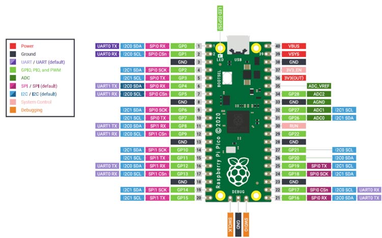
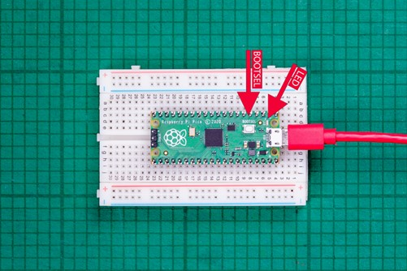

Exploring Raspberry Pi Pico

- It is a microcontroller based on RP2040 SoC.
- Dual-core ARM Cortex-M0+ clocked up to 133 MHz.
- 264 KB SRAM
- 2 MB QSPI flash storage
- Total Number of pins: 40
- 26 multi-function GPIO pins.
- Functionality of GPIO pins include:
- 2 UART
- 2 SPI
- 2 I2C
- 16 PWM Channels
- 3 Analog inputs
Development on Raspberry Pi Pico

Get Started with Pico: here
To setup development environment in Windows for Raspberry Pi Pico follow the section 9.2 Building on MS Windows.
According to the section, we need,
- ARM GCC Compiler
- CMake
- VS Code
- Python 3.9
- Git
- pico-sdk
- pico-examples
- Need to download and build picotool
- Need to download and build picoprobe
- To build a project – Cmake, it is a cross platform tool to build the software
- GNU Embedded Toolchain for ARM
To install above software, refer get startd book above.
Multiple cores in Pico
As we know that Pico is a dual core microcontroller. Name of its cores are core0 and core1. We tried measuring distnace using LiDAR on core0 and encoder on core1.
start and stop time for LiDAR: 50169441, 50172482
Duration for LiDAR: 3041
start and stop time for Encoder: 50177459, 50177519
Duration for Encoder: 60
Distance at -11000 angle is 211; Real Angle: 9000
Watchdog Functionality
In Pico Watchdog LOAD/Counter register is of 23 bits. So, maximum 0x7fffff = 83,88,607 count could be there. This count decreases with each microsecond tick. So, 8388607 microseconds is the highest delay we can have. Just need to enable the Watchdog timer using watchdog_enable() function and reset the counter to the required microseconds using watchdog_update() function. But, we just requires Watchdog timer for the mode operation. That’s why after reaching to the input angle, we are disabling the Watchdog timer. But, C/C++ SDK does not have a function to disable the Watchdog timer. So, we need to require to write one by ourselves to access internal CTRL register of Watchdog timer at address of 0x40058000.
Useful Resources
Raspberry Pi Pico: Official Website
C/C++ SDK: here
For more information refer documentation.